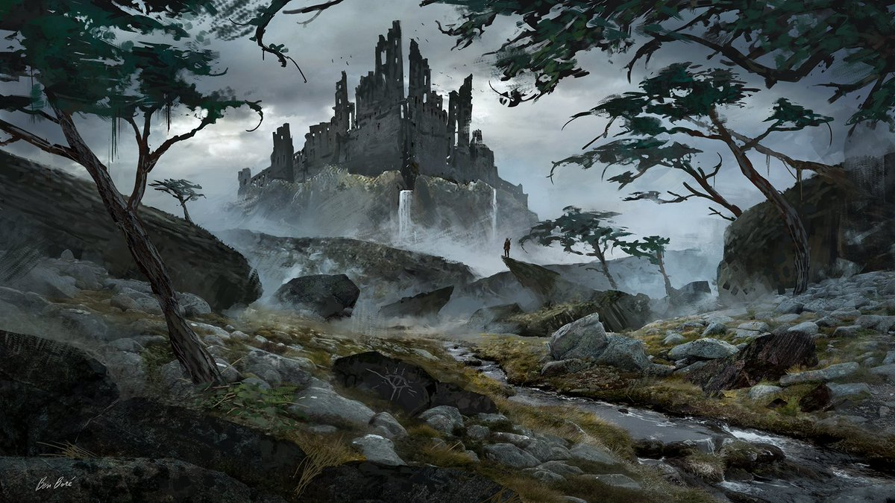

Começando em Dungeons & Dragons?
Dungeons & Dragons é um jogo de intepretação, onde histórias são contadas em mundos de espada e feitiçaria. Como em jogos de faz de conta, ele é conduzido pela sua imaginação.
“Vocês seguiram o caminho ao lado do rio, ao sairem da floresta vocês conseguem avistar um castelo em ruínas. Esse castelo é feito de pedras escuras, muitas das suas construções desmoronaram e pássaros negros podem ser visto voando sobre o castelo. O que vocês fazem?”
Com uma breve descrição pode ser o suficiente para sua imaginação aflorar, fazendo assim o número de histórias que podem ser criadas serem enormes.
Em sua essência, D&D é um jogo com foco narrativo. Os dados são apenas auxiliares. Todas as decisões são tomadas por você, desde sua aparência, como você age e até o que acontece a seguir.
As criações coletivas presentes em seu jogo de D&D constroem a história que você e seu grupo de amigos lembraram para sempre, desde acontecimentos lendários a incidentes absurdos que o farão rir anos depois. Pois a principal regra do D&D é se divertir.